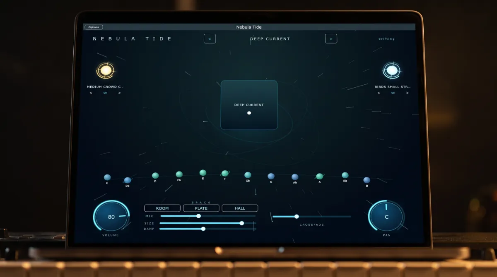

Free · Windows and macOS · Standalone and VST3
Nebula Tide
An ocean of sound, in every key.
Nebula Tide plays endless, seamless drone pads inside an interface that is alive. Every pad is a real recording in each of the twelve keys. Pick a preset, tap a key and press the square, and the room fills until you say stop.
Free · installs through Amanorsac Hub with a free account · standalone and VST3

A Pad in the Right Key, Right Now
Synths need programming. Loop packs end and click. A YouTube video is in the wrong key, with an ad in the middle of your set. What most players actually need is a beautiful bed of sound that starts when you press it and does not stop until you say so.
That is all Nebula Tide does, and it does it properly. Every preset ships as twelve separate studio recordings, one for each key, so nothing is pitch shifted anywhere in the engine. When you tap a key, the pad crossfades into a recording that was actually performed in that key, with its character intact.

The Living Interface
It Breathes With the Sound
Press the pad and the whole room answers. The square lights and pulses, the starfield speeds up with the output level and the aurora arcs turn. The status in the corner stops saying drifting and starts saying transmitting. It reads as an instrument, not a panel of controls.

Twelve Keys
Your E Flat Was Never a Stretched C
Tap a planet and the pad crossfades into the recording made in that key. Because nothing is pitch shifted, the low keys stay warm and the high keys stay clear, instead of everything sounding slightly wrong the further you move from the original.

Two Stars
Weather Included
A gold star on the left plays effects such as claps, prayers and swells. An ice blue star on the right plays textures such as wind, rain, birds and a room full of people. Both loop on their own, both survive a preset change, and both fade out gracefully when the pad stops. Drag a star up or down to set its level.

Space
Three Rooms, Three Clicks
Room, Plate and Hall are each tuned to the character of the classics rather than left as a generic setting. Mix, Size and Damp are there when you want to go further, and every preset arrives with its own sensible defaults.
One Preset, One Key
No browser, no grid and no tabs. The stage shows which preset is loaded, which key it is in and whether sound is leaving the app. Arrow left or right and the next preset swaps in under the crossfade.
Nothing Ever Hard Cuts
Pads, keys and whole presets change through a crossfade you set from half a second to twelve. The congregation should never hear the transition, only the new key.
Loops That Hold All Night
Looping is sample accurate, so a pad can run for a whole service without a click, a gap or a fade you did not ask for.
Packs Drop In
Presets live in a folder the app reads when it opens. A new sound pack is a folder you drop in, with no installer and no app update.
Hear It
Pick your preset, tap your key and press the square. It does not end until you end it. That is the whole manual.

The Other Ways People Get a Pad
| Pad loop packs | Synth pads | YouTube pads | Nebula Tide | |
|---|---|---|---|---|
| All twelve keys, really recorded | Rarely | Synthesised | No | Yes |
| Seamless endless loop | Often clicks | Yes | Ends, or an ad does | Yes |
| One click effects and textures | No | No | No | Yes |
| Ready without programming | Yes | No | Yes | Yes |
| VST3 and standalone | Files only | Plug-in only | No | Yes |
| Safe to put on a stage | Depends | Yes | No | Yes |

Nebula Tide 2
Want More? Meet Version 2
Version 2 adds a shimmer the pads run through, presets built from your own recordings and a drag that puts a MIDI clip on your timeline. It is pay what you want from $5, and this version stays free either way.
Tech Specs
Platforms
Windows and macOS.
Formats
Standalone and VST3 on Windows. Standalone on macOS.
Sounds
Deep Current included, as twelve real recordings, one per key. Never pitch shifted.
Crossfade
Adjustable from 0.5 to 12 seconds for pads, keys and presets.
Looping
Sample accurate and seamless.
Space
Room, Plate and Hall, with Mix, Size and Damp.
Effects and Textures
Two independent looping layers with their own levels.
Size
279 MB on Windows, 289 MB on Mac, Deep Current included. Further packs are FLAC.
Price
Free, with a free Amanorsac account.
Questions
Are the pads pitch shifted?
Will it click when it loops?
Does it work in my DAW?
Can I add my own sounds?
Do I need to be a musician?
From people who use it
What People Are Hearing
Be the first to leave one.
Thank you.
It goes up once I have read it, usually within a day or two.
Nebula Tide
Free
The player and the Deep Current preset, for Windows and Mac. Installs through Amanorsac Hub with a free account.